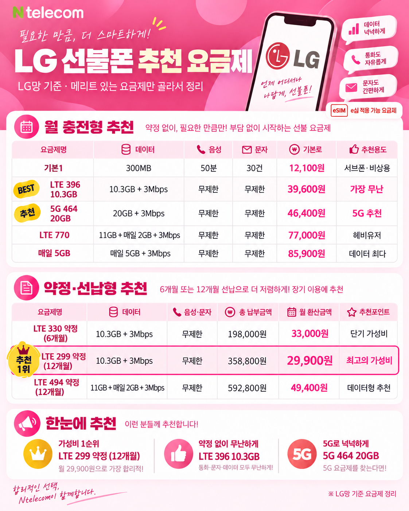
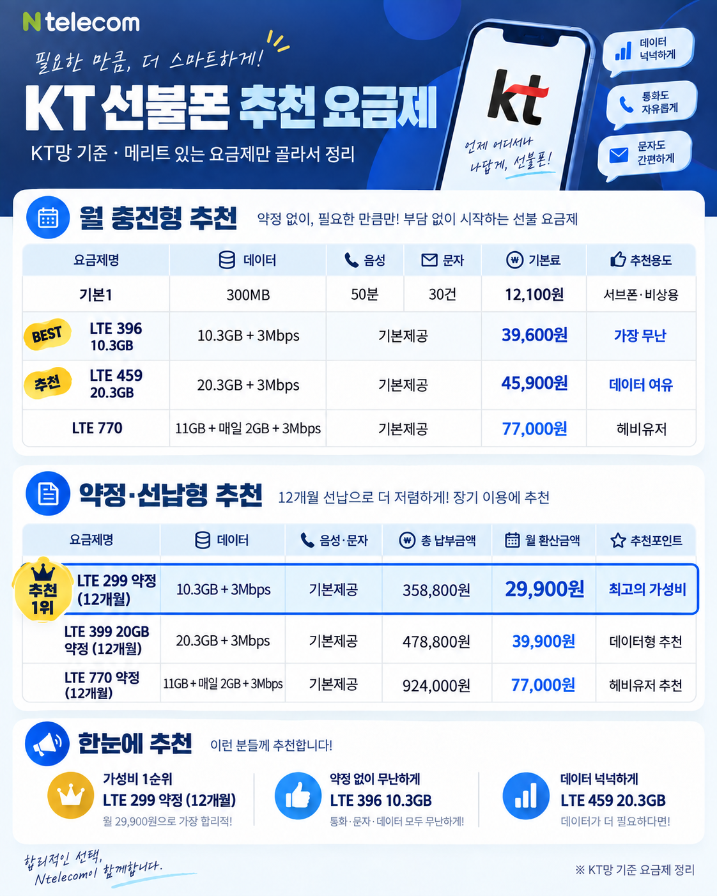

반고개역 주변에서 선불폰을 찾고 있다면 유심 준비부터 본인확인, 개통시간, 요금제까지 한 번에 확인해 보세요. 새 번호가 필요한 경우와 기존 번호를 유지하는 경우의 절차가 다르고, 비대면 여부는 모바일 인증서 준비 상태에 따라 달라집니다.
반고개역선불폰, 먼저 이것부터 확인하세요
| 구분 | 확인할 내용 |
|---|---|
| 신규개통 | 새로운 010 번호가 필요한 경우 |
| 번호이동 | 현재 번호를 그대로 유지하고 싶은 경우 |
| 비대면 | 모바일 인증서가 있는 경우 |
| 방문 | 모바일 인증서가 없거나 온라인 신청이 어려운 경우 |
| eSIM | 현재 LG망 선불만 가능 |
반고개역에서 선불폰을 찾는 경우
대구 반고개역을 기준으로 선불폰을 찾는 경우는 통신요금 미납·정지로 새 번호가 필요하거나, 업무용·세컨폰 번호를 별도로 쓰고 싶거나, 약정 없이 필요한 기간만 이용하려는 경우가 많습니다.
| 상황 | 안내 |
|---|---|
| 미납·정지 | 기존 회선과 별도로 선불 신규 가능 여부 확인 |
| 세컨폰 | 업무·인증용 새 번호가 필요할 때 |
| 번호 유지 | 번호이동 가능 시간과 기존 회선 상태 확인 |
| 단기 사용 | 약정 부담 없이 충전 방식으로 이용 |
비대면 개통과 방문 개통
| 방식 | 적합한 경우 | 필요한 것 |
|---|---|---|
| 비대면 | 반고개역 근처에서 이동 없이 바로 신청하고 싶은 경우 | 신분증, 모바일 인증서, 유심 또는 LG eSIM 지원 단말 |
| 방문 | 인증서가 없거나 신청 과정이 어려운 경우 | 신분증 + 방문 가능한 매장 확인 |
개통 전에 준비할 것
| 준비물 | 설명 |
|---|---|
| 신분증 | 본인 명의 확인 |
| 모바일 인증서 | 카카오·토스·PASS·국민·신한 등 |
| 유심 | KT 바로유심 또는 LG 모두의원칩·호환 유심 |
| eSIM | LG망 선불만 가능. 지원 기종이면 휴대폰 모델명 준비 |
| 첫 달 충전금 | 선택 요금제에 맞춰 준비 |
반고개역 선불폰 셀프개통 8단계
gatomobile.kr 또는 알뜰개통.kr에 접속합니다.
구매한 유심에 맞춰 KT 또는 LG를 선택합니다.
본인 명의 모바일 인증서로 본인확인을 진행합니다.
선불 → 유심 보유 → 일반유심을 선택합니다. eSIM은 LG망에서만 eSIM 항목을 선택합니다.
KT는 19자리(F 제외), LG는 모델코드+8자리를 입력합니다. LG eSIM은 휴대폰 모델명을 입력합니다.
데이터 사용량에 맞는 요금제를 선택합니다.
010 뒤 네 자리를 입력해 가능한 번호를 조회합니다.
안내에 따라 충전 후 단말기를 껐다 켜서 사용합니다.
신규와 번호이동 개통시간
| 유형 | 가능 시간 | 참고 |
|---|---|---|
| 신규개통 | 08:00~21:50 | 연휴 포함 |
| 번호이동 | 10:00~19:50 | 일요일·공휴일 제외 |
유심과 eSIM 준비
| 망 | 종류 | 준비 방법 |
|---|---|---|
| KT | 바로유심 | 세븐일레븐·CU·GS25 등 취급점에서 구매 |
| LG | 모두의원칩 | 이마트24 등 취급점에서 구매 |
| LG | 다이소 유심 | 빨간 패키지 기준, NFC 미지원 |
| LG | eSIM | 현재 선불 eSIM은 LG망만 가능. 지원 단말 및 모델명 확인 |
KT망 선불은 현재 eSIM으로 진행하지 않고 일반 유심을 사용합니다. eSIM을 원하면 LG망 선불 가능 여부와 단말 지원 여부를 먼저 확인하세요.
데이터 사용량에 맞는 요금제
| 사용 패턴 | 추천 기준 | 주요 용도 |
|---|---|---|
| 인증·문자 중심 | 기본형 | 인증번호, 문자 수신, 통화 위주 |
| 카톡·검색·지도 | 3Mbps 무제한형 | 메신저·검색·지도·720p 영상 |
| 영상·핫스팟 많음 | 5Mbps 대용량형 | 1080p 영상, 데이터 사용량이 많은 경우 |
대표 선불폰 요금제 비교
요금제는 데이터 사용량과 이용 기간에 맞춰 고르면 됩니다. 아래 표는 자주 선택하는 대표 요금제를 간단히 비교한 내용입니다.
LG망 대표 요금제
| 요금제 | 데이터 | 월 요금 | 추천 용도 |
|---|---|---|---|
| 기본1 | 300MB | 12,100원 | 서브폰·비상용 |
| LTE 396 10.3GB | 10.3GB + 3Mbps | 39,600원 | 카톡·검색·영상까지 무난하게 |
| 5G 464 20GB | 20GB + 3Mbps | 46,400원 | 5G 선불을 원하는 경우 |
| 매일 5GB | 매일 5GB + 3Mbps | 85,900원 | 데이터 사용량이 많은 경우 |
eSIM은 현재 LG망 선불에서만 가능합니다. 지원 단말 여부를 확인한 뒤 신청하세요.
KT망 대표 요금제
| 요금제 | 데이터 | 월 요금 | 추천 용도 |
|---|---|---|---|
| 기본1 | 300MB | 12,100원 | 서브폰·비상용 |
| LTE 396 10.3GB | 10.3GB + 3Mbps | 39,600원 | 카톡·검색·영상까지 무난하게 |
| LTE 459 20.3GB | 20.3GB + 3Mbps | 45,900원 | 데이터를 조금 더 넉넉하게 |
| LTE 770 | 11GB + 매일 2GB + 3Mbps | 77,000원 | 데이터 사용량이 많은 경우 |
LG 선불폰 추천 요금제 한눈에 보기

월 충전형과 약정·선납형 요금제를 함께 비교할 수 있습니다.
KT 선불폰 추천 요금제 한눈에 보기

월 충전형과 약정·선납형 요금제를 함께 비교할 수 있습니다.
요금제 구성과 제공 조건은 변경될 수 있으므로 실제 신청 전 최신 내용을 다시 확인해 주세요.
반고개역에서 상황별로 확인할 점
| 상황 | 진행 전 확인 |
|---|---|
| 미납·정지 | 후불 신규·번호이동 제한 여부와 별개로 선불 신규 가능 여부 확인 |
| 신용 문제·개인회생 | 선불은 선납 방식이므로 후불과 심사 방식이 다름 |
| 번호이동 | 기존 번호 상태와 번호이동 가능 시간 확인 |
| 인증서 없음 | 방문 개통 방식 확인 |
| eSIM 필요 | LG망만 가능, eSIM 지원 단말인지 확인 |
반고개역선불폰 자주 묻는 질문
반고개역에서도 당일 신규개통이 가능한가요?
유심과 본인확인 수단이 준비되어 있고 신규개통 가능 시간 안에 접수하면 당일 진행을 확인할 수 있습니다.
번호가 없어도 비대면 신청할 수 있나요?
현재 번호 유무보다 본인 명의 모바일 인증서가 준비되어 있는지가 중요합니다.
통신요금이 미납된 상태에서도 새 번호를 만들 수 있나요?
선불 신규는 사용할 요금을 먼저 충전하는 방식이라 기존 후불 회선과 별도로 진행 가능 여부를 확인할 수 있습니다.
eSIM으로 선불폰을 개통할 수 있나요?
현재 선불 eSIM은 LG망에서만 가능합니다. 지원 단말인지 확인한 뒤 모델명으로 신청합니다.
KT와 LG 중 어떤 망을 선택해야 하나요?
유심 종류, 단말 호환, 원하는 요금제와 eSIM 사용 여부를 기준으로 선택합니다. eSIM이 필요하면 현재 LG망만 가능합니다.